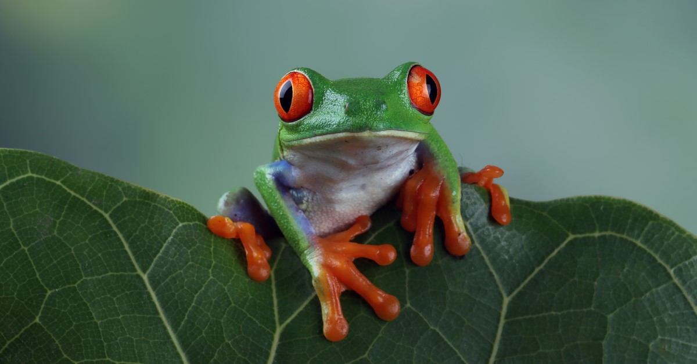
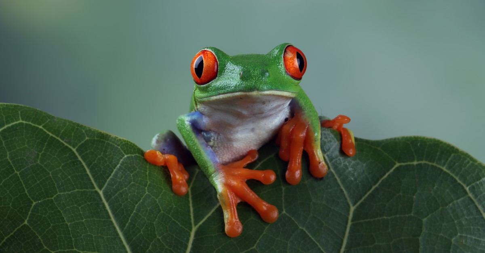

Types of Frogs
Poison Frogs
- Golden Poison Dart Frog (Phyllobates terribilis)
- Found in Colombia, it is one of the most toxic animals on Earth. Its skin secretes a potent toxin called batrachotoxin that can cause paralysis and death in predators.
- Blue Poison Dart Frog (Dendrobates tinctorius “azureus”)
- Native to the forests of Suriname, this species is famous for its vibrant blue coloration with black spots. Its toxins can cause severe irritation or even harm to predators.
- Strawberry Poison Dart Frog (Oophaga pumilio)
- Found in Central America, this frog comes in various color morphs. While less toxic than the golden poison dart frog, it still produces alkaloid toxins that deter predators.
- American Bullfrog (Lithobates catesbeianus)
- Found in North America, this large frog is non-toxic and often recognized by its deep, resonating croaks. It is commonly seen near ponds and lakes.
- Green Tree Frog (Dryophytes cinereus)
- Native to the southeastern United States, this small, bright green frog is harmless and often found clinging to trees or leaves in humid environments.
- White’s Tree Frog (Ranoidea caerulea)
- Also known as the Australian green tree frog, this species is non-toxic, docile, and popular in the pet trade due to its charming appearance and ease of care.
-
Some of my Favorites!
- Poison Dart Frog
- Goliath Frog
- Red-Eyed Tree Frog
- Amazon Milk Frog
- Glass Frog
- Purple Frog
- Australian Green Tree Frog
- Wood Frog
 

Typing Speed Game
Type the word shown below as quickly as possible!

Back to Top